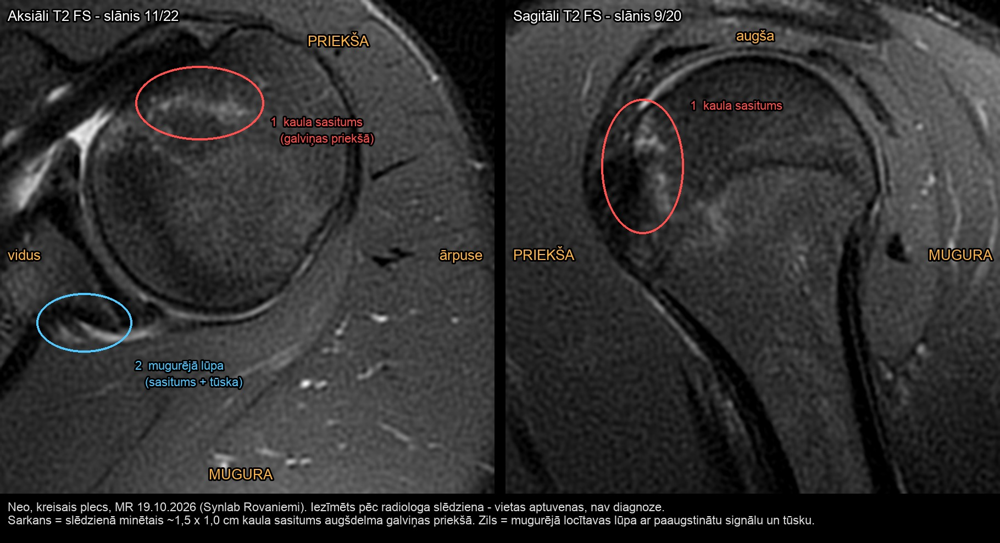
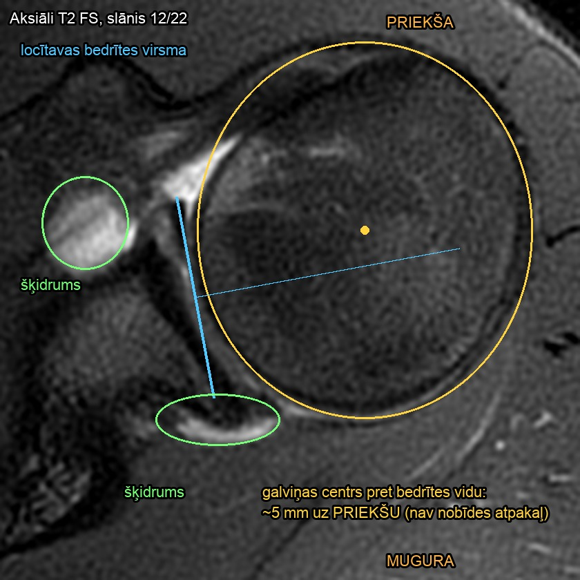

MR kreisais plecs 19.10.2026 - materiāli
Pirmreizēja traumatiska mugurēja pleca subluksācija (18.10.2026), 18 g. kalnu slēpotājs. Personas dati izņemti. Lapa domāta ārstiem, fizioterapeitam un MI rīkiem, kam dota saite.
Slēdziens un dokumenti
- MR slēdziens (EN oriģināls + LV tulkojums) (.md)
- PDF drukai · Saite un fizioterapija 1.-3. nedēļā (kopsavilkums ārstam un fizioterapeitam) (.md)
- Padziļinātā izpēte: klasifikācija, risks, atgriešanās sportā (.md)
- Padziļinātā izpēte: saite un rokas pozīcija (.md)
- Atgriešanās sportā pēc MR (literatūras kopsavilkums) (.md)
Iezīmētie attēli


Interaktīvs skatītājs
Atvērt DICOM skatītāju - oriģinālie 16 bitu dati, kontrasts, tuvināšana, mērīšana mm, krustošanās līnijas.
Visi slāņi kā attēli (JPG)
- 2_Aksiāli_T2_FS: 01 02 03 04 05 06 07 08 09 10 11 12 13 14 15 16 17 18 19 20 21 22
- 3_Sagitāli_T2_FS: 01 02 03 04 05 06 07 08 09 10 11 12 13 14 15 16 17 18 19 20
- 4_Sagitāli_T1: 01 02 03 04 05 06 07 08 09 10 11 12 13 14 15 16 17 18 19 20 21 22 23
- 5_Koronāli_T2_FS: 01 02 03 04 05 06 07 08 09 10 11 12 13 14 15 16 17 18 19 20 21 22 23
- 6_Koronāli_T1: 01 02 03 04 05 06 07 08 09 10 11 12 13 14 15 16 17 18 19 20 21 22 23


Oriģinālie dati
MR_plecs_DICOM_anonimizets.zip - visi 111 DICOM attēli (personas dati noņemti), ielādei PACS vai DICOM skatītājā.
Kopsavilkumi un izpētes nav ārsta atzinums.